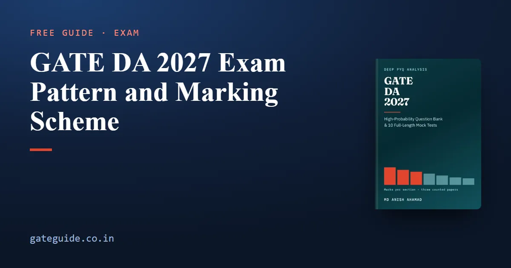

GATE DA 2027 Exam Pattern and Marking Scheme

The GATE DA paper is 65 questions for 100 marks in three hours. Fifteen marks are General Aptitude and 85 are technical, and the paper mixes three question types with different marking rules. This guide explains the frame that held in all three DA papers so far, then shows with a worked score how the marking rules turn answers into marks.
In this guide
Key takeaways
- All three counted DA papers (2024, 2025, 2026) had 65 questions, 100 marks, 30 one-mark and 35 two-mark questions.
- Questions 1 to 10 were General Aptitude for exactly 15 marks; questions 11 to 65 were technical for 85.
- MCQ carries negative marking: one third of the question's marks. MSQ and NAT carry none.
- MSQ has no partial credit. You score only by ticking every correct option and no wrong one.
- MSQ counts were 12, 18 and 14 a paper; NAT counts were 16, 12 and 18. Every MSQ and NAT was technical.
- The frame held under three different organising institutes. Still, confirm the 2027 pattern in the official notification.
The three question types, defined
A multiple-choice question (MCQ) has four options and exactly one is correct. A multiple-select question (MSQ) has four options and one or more are correct. A numerical-answer question (NAT) has no options; you type a number, and the key accepts a stated range.
Each question carries one mark or two. The type and the marks together decide what a right or wrong answer is worth.
The frame that held in every DA paper
The GATE DA 2027 book counted every question of the three papers against the official answer keys. Each paper closed on the same frame.
| Block | Questions | Marks each | Marks |
|---|---|---|---|
| General Aptitude | Q1 to Q5 | 1 | 5 |
| General Aptitude | Q6 to Q10 | 2 | 10 |
| Technical | Q11 to Q35 | 1 | 25 |
| Technical | Q36 to Q65 | 2 | 60 |
| Total | 65 | 100 |
So the one-mark questions give marks and the two-mark questions give . The technical block is .
The three papers were set by IISc Bengaluru (2024), IIT Roorkee (2025) and IIT Guwahati (2026). GATE 2027 is organised by IIT Madras, which has never set a DA paper. The frame surviving three changes of organiser is the safest thing to plan on, but it is not a promise.
Remember: The frame has been fixed. The split of the 85 technical marks between sections has not.
How the question types were distributed
The counts below cover the whole paper of 65 questions.
| Year | MCQ | MSQ | NAT |
|---|---|---|---|
| 2024 | 37 | 12 | 16 |
| 2025 | 35 | 18 | 12 |
| 2026 | 33 | 14 | 18 |
All thirty General Aptitude questions across the three papers were MCQs. That puts every MSQ and every NAT inside the technical 85 marks. Across the three papers, 44 of the 165 technical questions were MSQs, a little over a quarter.
Some sections lean harder on MSQ than others. Linear Algebra had 8 MSQs in 19 questions, and Calculus and Optimization had 6 in 14. Those two sections reward knowing properties exactly.
The marking rules
These are the rules the official keys apply, and they are common to every GATE paper. The marking scheme guide, which applies to every GATE paper including DA, covers them in more detail.
| Type | Correct | Wrong | Partly correct |
|---|---|---|---|
| MCQ, 1 mark | +1 | not possible | |
| MCQ, 2 marks | +2 | not possible | |
| MSQ | full marks | 0 | 0 |
| NAT | full marks if inside the range | 0 | not applicable |
Two consequences follow. A blank NAT can never beat a guessed NAT, because a wrong NAT costs nothing. And a blank MSQ can never beat an attempted one, for the same reason.
Trap: MSQ has no negative marking, but it is still the harshest format. One extra tick, or one missing tick, turns a full answer into zero.
Worked example: turning answers into a score
Here is a made-up attempt, chosen to use every rule once. The candidate attempts 49 questions.
| Type | Right | Wrong |
|---|---|---|
| MCQ, 1 mark | 12 | 3 |
| MCQ, 2 marks | 10 | 4 |
| MSQ | 5 (two at 1 mark, three at 2 marks) | 4 |
| NAT | 8 (three at 1 mark, five at 2 marks) | 3 |
Step 1: the MCQ marks
The MCQ score is the marks for right answers minus one third of the marks of each wrong one:
Step 2: the MSQ and NAT marks
Only fully right answers count, and wrong ones cost nothing. The MSQ score is . The NAT score is .
Step 3: the total
Notice where the loss sits. The seven wrong MCQs cost 3.67 marks. The seven wrong MSQs and NATs cost nothing directly, but they also earned nothing.
What the record says about MSQ and NAT
Three MSQs in the counted record had exactly one correct option in the official key: 2025 (Q27), 2026 (Q23) and 2026 (Q51). So "select all that apply" can mean one. Judge each option as a separate true-or-false statement.
The NAT key prints a range. In 2026 (Q59), a tuple count whose answer is a whole number, the key accepted 2 to 3. Do not round early, and read the precision a question asks for. The virtual calculator guide helps you avoid slips in the numerical questions.
How the marks become a GATE score
Your raw marks are converted into a GATE score using the official formula. When a paper runs in more than one session, normalisation also applies. DA has been held as a single session each year so far; the score calculation guide explains both formulas.
The book's ten mock tests follow this exact frame, with the MSQ and NAT counts varied inside the 12-to-18 range the real papers used. This guide gives you the rules; the GATE DA 2027 book gives you full papers to practise them under time.
What to confirm for 2027
The duration, question count, mark split and negative marking above are what the counted papers and the official GATE pattern show. Anything specific to the 2027 DA paper, including the number of each question type, is not announced in advance. Check the current notification on the official portal and read the instructions on the exam screen.
Quick revision
- 65 questions, 100 marks, three hours; 30 one-mark and 35 two-mark questions.
- Q1 to Q10 General Aptitude (15 marks); Q11 to Q65 technical (85 marks).
- MCQ wrong answer: minus one third of its marks.
- MSQ and NAT: no negative marking, so never leave one blank.
- MSQ: no partial credit; one correct option is possible.
- MSQ counts so far 12, 18, 14; NAT counts 16, 12, 18; all technical.
- All 30 General Aptitude questions so far were MCQs.
Frequently asked questions
What is the exam pattern of GATE DA?
All three DA papers so far had 65 questions for 100 marks in three hours, as a computer-based test. Questions 1 to 10 were General Aptitude for 15 marks, and questions 11 to 65 were technical for 85 marks. Thirty questions carried one mark and thirty-five carried two. Confirm the 2027 details in the official notification.
Is there negative marking in GATE DA?
Only on multiple-choice questions. A wrong one-mark MCQ costs one third of a mark and a wrong two-mark MCQ costs two thirds. Multiple-select and numerical-answer questions carry no negative marking, so a blank MSQ or NAT can never score more than an attempt.
How many MSQ questions come in GATE DA?
The three counted papers had 12, 18 and 14 multiple-select questions, all of them in the technical sections. Expect a number in roughly that range, but no count is fixed, so practise the format rather than planning around a particular figure. Three MSQs in the record had only one correct option.
Are General Aptitude questions in GATE DA MCQ only?
In the three DA papers set so far, all thirty General Aptitude questions were single-answer multiple-choice questions. That means every one carried negative marking. The 2027 paper may differ, so read each question's type on screen rather than assuming it.
Is there partial marking for MSQ in GATE DA?
No. A multiple-select question scores only when you select every correct option and no incorrect one. Selecting three of four correct options, or adding one wrong option to all the right ones, scores zero. There is no penalty either, so judge each option separately and always submit an answer.
Sources
- GATE 2027 official website (IIT Madras)
- GATE 2026 DA answer key (IIT Guwahati)
- GATE 2025 DA answer key (IIT Roorkee)
- GATE 2024 DA final answer key (IISc Bengaluru)
Dates, fees and the syllabus are set by the GATE 2027 organising institute and can change. Always confirm at gate2027.iitm.ac.in.